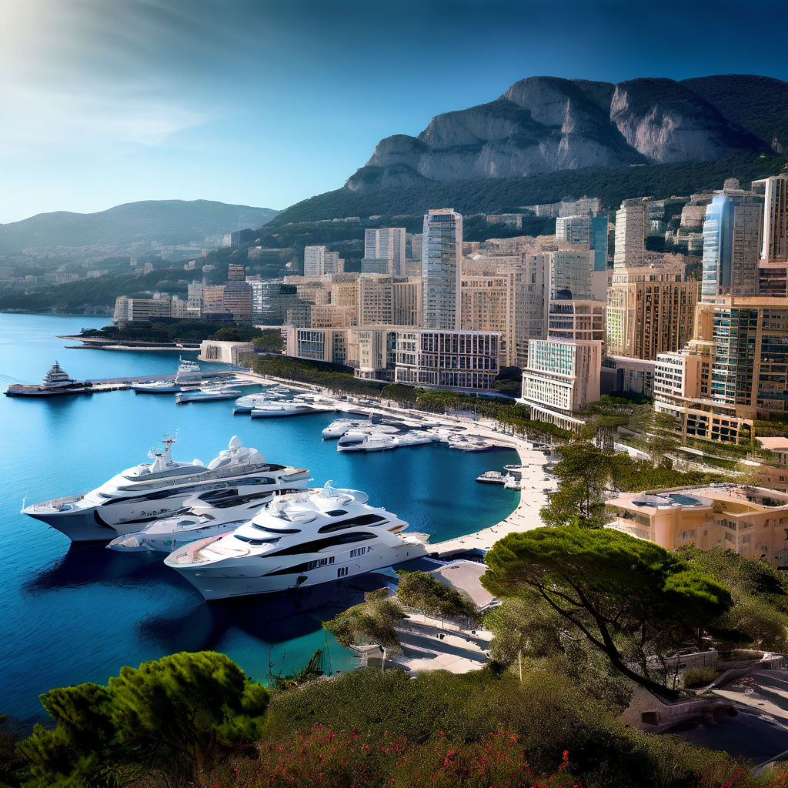

Author: Edison VARGAS
Date: June 20, 2024
Monaco, the small yet affluent principality on the French Riviera, is expected to be added to the Financial Action Task Force's (FATF) "gray list" next week. This list comprises countries under increased scrutiny for their efforts to combat money laundering and terrorism financing.
Monaco's inclusion on the gray list stems from a recent report by MONEYVAL, a monitoring body of the Council of Europe, which highlighted significant delays and inefficiencies in Monaco's anti-money laundering (AML) procedures. Despite some progress, the report criticized the lack of resources dedicated to compliance and the lengthy appeal processes that hinder effective action against financial crimes.
In response to the MONEYVAL report, Monaco's government expressed a strong commitment to addressing these issues. Minister of State Pierre Dartout emphasized the principality's dedication to implementing the recommendations swiftly. The government has already taken steps to enhance its legal framework, including passing new laws related to international legal assistance and the confiscation of proceeds from crime.
Finance Minister Jean Castellini reiterated the government's resolve to meet the March 2024 deadline for significant improvements, ensuring that Monaco aligns with the highest international standards in the fight against money laundering and terrorism financing.
Being on the gray list could have considerable implications for Monaco's financial sector. Increased scrutiny from international bodies may affect the principality's reputation as a financial hub and could lead to stricter regulations and oversight from international financial institutions.
Monaco's anticipated addition to the FATF gray list underscores the importance of robust and effective AML measures in maintaining international financial integrity. The principality's swift response and commitment to reform are crucial steps toward meeting global standards and ensuring long-term economic stability.